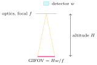

Definition
- (rad): intrinsic to the instrument.
- : depends on altitude.
- GSI (ground sample interval): distance on the ground between neighbouring pixel centres; usually equal to the GIFOV, sometimes smaller along the scan (overlapping cells, better sampling).
- Swath: width of the imaged strip; FOV the total angle of view.
- Whiskbroom (across-track): a rotating or oscillating mirror sweeps one or few detectors across the track (Landsat TM). Pushbroom (along-track): a linear array with one detector per across-track pixel images a whole line at once; the platform motion provides the second dimension (SPOT, Sentinel-2). Pushbrooms have longer dwell time per pixel, hence better SNR, and no moving parts, but must calibrate thousands of detectors.
Derivation
For km, m and µm: m. Halving the altitude or doubling the focal length halves the pixel.
Picture

 sees a ground footprint GIFOV .
sees a ground footprint GIFOV .Intuition
The pixel on the ground is the detector projected through a lens from very high up: shrink the detector, lengthen the lens or fly lower to see finer detail.
Pitfall
The GIFOV grows off nadir (the line of sight is longer and oblique): pixels at the edge of a wide swath cover more ground than at the centre — the panoramic distortion of wide-angle scanners.